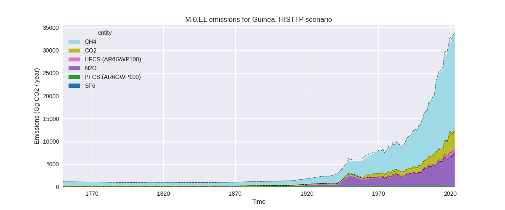
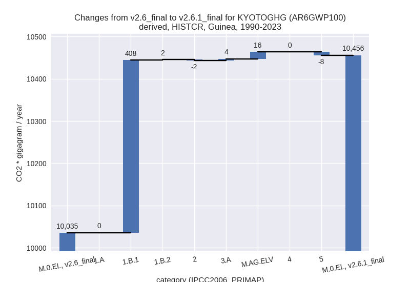
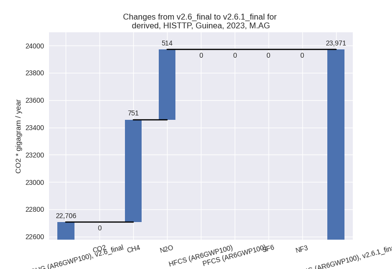

Changes in PRIMAP-hist v2.6.1_final compared to v2.6_final for Guinea
2025-03-19
Johannes Gütschow
Change analysis for Guinea for PRIMAP-hist v2.6.1_final compared to v2.6_final
Overview over emissions by sector and gas
The following figures show the aggregate national total emissions excluding LULUCF AR6GWP100 for the country reported priority scenario. The dotted linesshow the v2.6_final data.

The following figures show the aggregate national total emissions excluding LULUCF AR6GWP100 for the third party priority scenario. The dotted linesshow the v2.6_final data.

Overview over changes
In the country reported priority scenario we have the following changes for aggregate Kyoto GHG and national total emissions excluding LULUCF (M.0.EL):
- Emissions in 2023 have changed by 4.4%% (802.61 Gg CO2 / year)
- Emissions in 1990-2023 have changed by 4.2%% (420.39 Gg CO2 / year)
In the third party priority scenario we have the following changes for aggregate Kyoto GHG and national total emissions excluding LULUCF (M.0.EL):
- Emissions in 2023 have changed by -0.2%% (-80.18 Gg CO2 / year)
- Emissions in 1990-2023 have changed by -2.0%% (-417.95 Gg CO2 / year)
Most important changes per scenario and time frame
In the country reported priority scenario the following sector-gas combinations have the highest absolute impact on national total KyotoGHG (AR6GWP100) emissions in 2023 (top 5):
- 1: 1.B.1, CH4 with 522.53 Gg CO2 / year (109.8%)
- 2: M.AG.ELV, N2O with 306.77 Gg CO2 / year (9.0%)
- 3: 3.A, CH4 with 88.56 Gg CO2 / year (0.9%)
- 4: 5, N2O with -77.22 Gg CO2 / year (-22.4%)
- 5: 2, CO2 with -46.81 Gg CO2 / year (-28.5%)
In the country reported priority scenario the following sector-gas combinations have the highest absolute impact on national total KyotoGHG (AR6GWP100) emissions in 1990-2023 (top 5):
- 1: 1.B.1, CH4 with 402.95 Gg CO2 / year (131.8%)
- 2: M.AG.ELV, N2O with 16.21 Gg CO2 / year (0.9%)
- 3: 5, N2O with -7.95 Gg CO2 / year (-2.3%)
- 4: 1.B.1, N2O with 5.34 Gg CO2 / year (131.8%)
- 5: 3.A, CH4 with 3.86 Gg CO2 / year (0.1%)
In the third party priority scenario the following sector-gas combinations have the highest absolute impact on national total KyotoGHG (AR6GWP100) emissions in 2023 (top 5):
- 1: 4, CH4 with -965.29 Gg CO2 / year (-30.1%)
- 2: 1.A, CH4 with -722.35 Gg CO2 / year (-41.0%)
- 3: M.AG.ELV, CH4 with 664.47 Gg CO2 / year (10.8%)
- 4: 1.B.1, CH4 with 522.53 Gg CO2 / year (109.8%)
- 5: M.AG.ELV, N2O with 513.50 Gg CO2 / year (8.1%)
In the third party priority scenario the following sector-gas combinations have the highest absolute impact on national total KyotoGHG (AR6GWP100) emissions in 1990-2023 (top 5):
- 1: 4, CH4 with -640.51 Gg CO2 / year (-32.0%)
- 2: 1.B.1, CH4 with 402.95 Gg CO2 / year (131.8%)
- 3: 1.A, CH4 with -204.28 Gg CO2 / year (-13.8%)
- 4: M.AG.ELV, N2O with 27.08 Gg CO2 / year (0.7%)
- 5: M.AG.ELV, CH4 with 26.95 Gg CO2 / year (0.6%)
Notes on data changes
Here we list notes explaining important emissions changes for the country.
- No new country reported data has been included. Changes in the CR
time-series come from updated third party data (FAO, EDGAR) which is
used to extrapolate country reported data for some sectors, but is the
only data source for other sectors.
- The highest contribution to total emissions changes is from CH4 in 1.B.1 which comes directly from EDGAR. For 2023 additional substantial contributions come from higher agricultural emissions due to the new FAO data which added another year of data which differs from the short term trends.
- Aggregate changes in the TP scenario are smaller because the new EDGAR data leads to lower CH4 emissions in sectors 1.A and 4 cancelling the higher emissions in 1.B.1 and the agricultural sector.
Changes by sector and gas
For each scenario and time frame the changes are displayed for all individual sectors and all individual gases. In the sector plot we use aggregate Kyoto GHGs in AR6GWP100. In the gas plot we usenational total emissions without LULUCF.
country reported scenario
2023

1990-2023

third party scenario
2023
1990-2023
Detailed changes for the scenarios:
country reported scenario (HISTCR):
Most important changes per time frame
For 2023 the following sector-gas combinations have the highest absolute impact on national total KyotoGHG (AR6GWP100) emissions in 2023 (top 5):
- 1: 1.B.1, CH4 with 522.53 Gg CO2 / year (109.8%)
- 2: M.AG.ELV, N2O with 306.77 Gg CO2 / year (9.0%)
- 3: 3.A, CH4 with 88.56 Gg CO2 / year (0.9%)
- 4: 5, N2O with -77.22 Gg CO2 / year (-22.4%)
- 5: 2, CO2 with -46.81 Gg CO2 / year (-28.5%)
For 1990-2023 the following sector-gas combinations have the highest absolute impact on national total KyotoGHG (AR6GWP100) emissions in 1990-2023 (top 5):
- 1: 1.B.1, CH4 with 402.95 Gg CO2 / year (131.8%)
- 2: M.AG.ELV, N2O with 16.21 Gg CO2 / year (0.9%)
- 3: 5, N2O with -7.95 Gg CO2 / year (-2.3%)
- 4: 1.B.1, N2O with 5.34 Gg CO2 / year (131.8%)
- 5: 3.A, CH4 with 3.86 Gg CO2 / year (0.1%)
Changes in the main sectors for aggregate KyotoGHG (AR6GWP100) are
- 1: Total sectoral emissions in 2022 are 4348.24 Gg
CO2 / year which is 23.5% of M.0.EL emissions. 2023 Emissions have
changed by 14.0% (523.97 Gg CO2 /
year). 1990-2023 Emissions have changed by 15.2% (410.35 Gg CO2 / year). For 2023 the
changes per gas
are:
For 1990-2023 the changes per gas are:
The changes come from the following subsectors:- 1.A: Total sectoral emissions in 2022 are 3277.17 Gg CO2 / year which is 75.4% of category 1 emissions. 2023 Emissions have changed by -0.2% (-5.49 Gg CO2 / year). 1990-2023 Emissions have changed by 0.0% (0.50 Gg CO2 / year).
- 1.B.1: Total sectoral emissions in 2022 are 1011.71
Gg CO2 / year which is 23.3% of category 1 emissions. 2023 Emissions
have changed by 109.8% (529.46 Gg
CO2 / year). 1990-2023 Emissions have changed by 131.8% (408.29 Gg CO2 / year). For 2023
the changes per gas
are:
For 1990-2023 the changes per gas are:
There is no subsector information available in PRIMAP-hist. - 1.B.2: Total sectoral emissions in 2022 are 59.36
Gg CO2 / year which is 1.4% of category 1 emissions. 2023 Emissions have
changed by -0.0% (-0.00 Gg CO2 /
year). 1990-2023 Emissions have changed by 5.0% (1.56 Gg CO2 / year). For 1990-2023
the changes per gas
are:
There is no subsector information available in PRIMAP-hist.
- 2: Total sectoral emissions in 2022 are 126.83 Gg
CO2 / year which is 0.7% of M.0.EL emissions. 2023 Emissions have
changed by -26.8% (-46.89 Gg CO2 /
year). 1990-2023 Emissions have changed by -5.6% (-2.18 Gg CO2 / year). For 2023 the
changes per gas
are:
For 1990-2023 the changes per gas are: - M.AG: Total sectoral emissions in 2022 are 13344.72
Gg CO2 / year which is 72.0% of M.0.EL emissions. 2023 Emissions have
changed by 2.9% (395.86 Gg CO2 /
year). 1990-2023 Emissions have changed by 0.3% (20.13 Gg CO2 / year). For 2023 the
changes per gas
are:
The changes come from the following subsectors:- 3.A: Total sectoral emissions in 2022 are 9755.86 Gg CO2 / year which is 73.1% of category M.AG emissions. 2023 Emissions have changed by 0.9% (88.56 Gg CO2 / year). 1990-2023 Emissions have changed by 0.1% (3.86 Gg CO2 / year).
- M.AG.ELV: Total sectoral emissions in 2022 are
3588.86 Gg CO2 / year which is 26.9% of category M.AG emissions. 2023
Emissions have changed by 8.9%
(307.31 Gg CO2 / year). 1990-2023 Emissions have changed by 0.9% (16.27 Gg CO2 / year). For 2023 the
changes per gas
are:
There is no subsector information available in PRIMAP-hist.
- 4: Total sectoral emissions in 2022 are 390.53 Gg CO2 / year which is 2.1% of M.0.EL emissions. 2023 Emissions have changed by 1.7% (6.88 Gg CO2 / year). 1990-2023 Emissions have changed by 0.0% (0.04 Gg CO2 / year).
- 5: Total sectoral emissions in 2022 are 313.71 Gg
CO2 / year which is 1.7% of M.0.EL emissions. 2023 Emissions have
changed by -22.4% (-77.22 Gg CO2 /
year). 1990-2023 Emissions have changed by -2.3% (-7.95 Gg CO2 / year). For 2023 the
changes per gas
are:
For 1990-2023 the changes per gas are:
third party scenario (HISTTP):
Most important changes per time frame
For 2023 the following sector-gas combinations have the highest absolute impact on national total KyotoGHG (AR6GWP100) emissions in 2023 (top 5):
- 1: 4, CH4 with -965.29 Gg CO2 / year (-30.1%)
- 2: 1.A, CH4 with -722.35 Gg CO2 / year (-41.0%)
- 3: M.AG.ELV, CH4 with 664.47 Gg CO2 / year (10.8%)
- 4: 1.B.1, CH4 with 522.53 Gg CO2 / year (109.8%)
- 5: M.AG.ELV, N2O with 513.50 Gg CO2 / year (8.1%)
For 1990-2023 the following sector-gas combinations have the highest absolute impact on national total KyotoGHG (AR6GWP100) emissions in 1990-2023 (top 5):
- 1: 4, CH4 with -640.51 Gg CO2 / year (-32.0%)
- 2: 1.B.1, CH4 with 402.95 Gg CO2 / year (131.8%)
- 3: 1.A, CH4 with -204.28 Gg CO2 / year (-13.8%)
- 4: M.AG.ELV, N2O with 27.08 Gg CO2 / year (0.7%)
- 5: M.AG.ELV, CH4 with 26.95 Gg CO2 / year (0.6%)
Changes in the main sectors for aggregate KyotoGHG (AR6GWP100) are
- 1: Total sectoral emissions in 2022 are 6243.36 Gg
CO2 / year which is 18.9% of M.0.EL emissions. 2023 Emissions have
changed by -4.4% (-279.00 Gg CO2 /
year). 1990-2023 Emissions have changed by 4.3% (181.13 Gg CO2 / year). For 2023 the
changes per gas
are:
For 1990-2023 the changes per gas are:
The changes come from the following subsectors:- 1.A: Total sectoral emissions in 2022 are 5172.29
Gg CO2 / year which is 82.8% of category 1 emissions. 2023 Emissions
have changed by -13.8% (-808.46 Gg
CO2 / year). 1990-2023 Emissions have changed by -5.9% (-228.73 Gg CO2 / year). For 2023
the changes per gas
are:
For 1990-2023 the changes per gas are:
There is no subsector information available in PRIMAP-hist. - 1.B.1: Total sectoral emissions in 2022 are 1011.71
Gg CO2 / year which is 16.2% of category 1 emissions. 2023 Emissions
have changed by 109.8% (529.46 Gg
CO2 / year). 1990-2023 Emissions have changed by 131.8% (408.29 Gg CO2 / year). For 2023
the changes per gas
are:
For 1990-2023 the changes per gas are:
There is no subsector information available in PRIMAP-hist. - 1.B.2: Total sectoral emissions in 2022 are 59.36
Gg CO2 / year which is 1.0% of category 1 emissions. 2023 Emissions have
changed by -0.0% (-0.00 Gg CO2 /
year). 1990-2023 Emissions have changed by 5.0% (1.56 Gg CO2 / year). For 1990-2023
the changes per gas
are:
There is no subsector information available in PRIMAP-hist.
- 1.A: Total sectoral emissions in 2022 are 5172.29
Gg CO2 / year which is 82.8% of category 1 emissions. 2023 Emissions
have changed by -13.8% (-808.46 Gg
CO2 / year). 1990-2023 Emissions have changed by -5.9% (-228.73 Gg CO2 / year). For 2023
the changes per gas
are:
- 2: Total sectoral emissions in 2022 are 979.22 Gg CO2 / year which is 3.0% of M.0.EL emissions. 2023 Emissions have changed by -1.6% (-17.05 Gg CO2 / year). 1990-2023 Emissions have changed by -0.5% (-1.67 Gg CO2 / year).
- M.AG: Total sectoral emissions in 2022 are 23130.24
Gg CO2 / year which is 70.1% of M.0.EL emissions. 2023 Emissions have
changed by 5.6% (1265.15 Gg CO2 /
year). 1990-2023 Emissions have changed by 0.4% (59.97 Gg CO2 / year). For 2023 the
changes per gas
are:

The changes come from the following subsectors:- 3.A: Total sectoral emissions in 2022 are 9839.63 Gg CO2 / year which is 42.5% of category M.AG emissions. 2023 Emissions have changed by 0.9% (87.17 Gg CO2 / year). 1990-2023 Emissions have changed by 0.1% (5.94 Gg CO2 / year).
- M.AG.ELV: Total sectoral emissions in 2022 are
13290.61 Gg CO2 / year which is 57.5% of category M.AG emissions. 2023
Emissions have changed by 9.4%
(1177.98 Gg CO2 / year). 1990-2023 Emissions have changed by 0.6% (54.03 Gg CO2 / year). For 2023 the
changes per gas
are:
There is no subsector information available in PRIMAP-hist.
- 4: Total sectoral emissions in 2022 are 2323.46 Gg
CO2 / year which is 7.0% of M.0.EL emissions. 2023 Emissions have
changed by -28.8% (-972.06 Gg CO2 /
year). 1990-2023 Emissions have changed by -30.8% (-649.43 Gg CO2 / year). For 2023
the changes per gas
are:
For 1990-2023 the changes per gas are: - 5: Total sectoral emissions in 2022 are 313.71 Gg
CO2 / year which is 1.0% of M.0.EL emissions. 2023 Emissions have
changed by -22.4% (-77.22 Gg CO2 /
year). 1990-2023 Emissions have changed by -2.3% (-7.95 Gg CO2 / year). For 2023 the
changes per gas
are:
For 1990-2023 the changes per gas are: